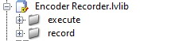

the FRC Encoder Recorder is a labview library written to make the use of motor encoders simple.
all the thing you need are inside of two virtual folders
inside of the record folder are vi's used to record encoder distance and display it to the user
inside of the execute folder are vi's used to move a motor or motors to a desired encoder distance
note: all users have the right to decompile, modify and redistribute the source code of this library.
this vi is used to record the endoced distance from 2 drive motors(1 left motor and one right motor)
leftSpeed: the % output of the left drive motors
rightSpeed: the % output of the right drive motors
driveMotors: the refnum name of the drive motors
leftMotor: the left motor encoder that tracks the distance travled
rightMotor: the right motor encoder that tracks the distance travled
motorController: indicates which type of motor controller is being used
leftDistance: the encoder distance of the left motor encoder
rightDistance: the encoder distance of the right motor encoder
this vi is used to move the drive train a set number of encoder distance
leftSpeed: the % output of the left drive motors
rightSpeed: the % output of the right drive motors
driveMotors: the refnum name of the drive motors
leftMotor: the left motor encoder that tracks the distance travled
rightMotor: the right motor encoder that tracks the distance travled
motorController: indicates which type of motor controller is being used
desiredDistanceLeft: the desired encoder distance of the left motor
desiredDistanceRight: the desired encoder distance of the right motor
returns nothing